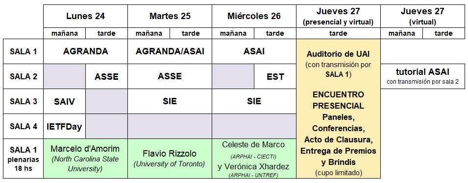
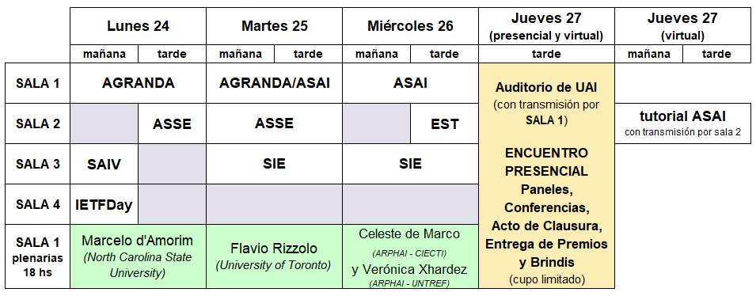

_2.png)
En 2023 las 52 JAIIO se realizarán en la Ciudad de Buenos Aires de manera presencial. Para más información https://52jaiio.sadio.org.ar/
Ya se encuentran publicadas las Memorias de las JAIIO (sadio.org.ar)
En este VIDEO les mostramos un resumen de lo que pasó en las 51 JAIIO
Estimados Amigos,
- Inteligencia Artificial Responsable / Responsible AI. Ricardo Baeza-Yates (Instituto de IA Experiencial @ Northeastern University)
- Potencial educativo de PROLOG. Verónica Dahl (Prolog Education) (SAEI)
- Healthcare and the Social Implications of Global Digital Exclusion. Luis Kun (CHDS - SSIT) y María Daniela López de Luise (UADER, UAI, UNCU, UCP y UTN)
- Automated Software Engineering Research: Challenges and Opportunites. Marcelo d'Amorim (North Carolina State University) (ASSE)
- The Multicultural and Collaborative Hacker Way. Martín Nordio (Red-Expel GmbH) (ASSE)
- Interoperabilidad y estandarización en la producción oficial de estadísticas: la experiencia canadiense. Flavio Rizzolo (University of Toronto - Department of Computer Science) (AGRANDA)
- Aprendizajes del Proyecto ARPHAI: Gestión epidemiológica basada en inteligencia artificial y ciencia de datos. Celeste de Marco (ARPHAI - CIECTI) y Verónica Xhardez (ARPHAI - UNTREF) (ASAI)
AGRANDA
"Desarrollo de un pipeline de datos para la predicción de incendios forestales en Pinamar”
Ana Martínez Saucedo y Pablo Ezequiel Inchausti (Universidad Argentina de la Empresa (UADE) - Instituto de Tecnología (INTEC))
ASAI
“Domain Adaptation and Transfer Learning methods enhance Deep Learning Models used in Inner Speech Based Brain Computer Interfaces”
Luciano Iván Zablocki (Fac. de Ingeniería y Cs. Hídricas, UNL); Agustín Nicolás Mendoza (Fac. de Ingeniería y Cs. Hídricas, UNL); Nicolás Nieto (Inst. Matemática Aplic. del Litoral-Inst. Invest. Señales, Sist. e Inteligencia Computación - UNL-CONICET).
ASSE
“Estudios empíricos realizados con colecciones de proyectos software: un mapeo sistemático”
Juan Andrés Carruthers (Univ. Nac. del Nordeste, Depto. de Informática); Jorge Andrés Díaz-Pace (Univ. Nac. del Centro de la Prov. de Bs. As., Inst. Sup. Ingeniería del Software); Emanuel Agustín Irrazábal (Univ. Nac. del Nordeste, Depto. de Informática)
CAI
“Fusión de información satelital con vuelos a baja altura de aeronaves no tripuladas para estimar la cobertura de malezas”
Ulises Bussi (Univ. Nac. de Quilmes - CONICET); Martín Sauczuk (Univ. Nac. de Quilmes); Guillermo Mandile (Univ. Nac. de Quilmes); Santiago Poggio (IFEVA, Univ. de Buenos Aires, CONICET. Fac. de Agronomía); Damián Oliva (Univ. Nac. de Quilmes - CONICET)
CAIS
“Software Hope: tratamiento educativo para enseñar danza a través de realidad aumentada a niños con autismo”
Mónica del Rocío Romero Pazmiño (Univ. Nac. de la Plata, Facultad de Informática, Lab. de Investigación de Nuevas Tecnologías Informáticas LINTI)
EST
“Internet de las Cosas y sistemas embebidos: Smartband reminder”
Mateo Scozzina; Pablo Angel Toledo y Enrique Roatta (Universidad Abierta Interamericana)
JUI
“Prototipo de recomendación inteligente de anuncios en portal de ventas online: una experiencia de vinculación entre institutos de investigación y empresa”
Sebastián Vallejos; Luis Berdun; Marcelo Armentano; Silvia Schiaffino (ISISTAN (CONICET - UNCPBA)); Sandra González Císaro; Oscar Nigro (INTIA, Fac. Cs. Exactas); Ignacio Cuesta; Leonardo Balduzzi (Región Global)
SAEI
“Modelado de currículos de ingenierías basados en competencias:
un mapeo sistemático de la literatura”
Viviana A. Santucci (GIDIS, FICH-UNL); Jimena Bourlot (GIDIS, FICH-UNL); Mariel Ale (CIDISI, UTN-FRSF); Lucila Romero (GIDIS, FICH-UNL)
SAHTI
“CCDB Gravação Profissional. Entre o cognitivo, o cultural e o tecnológico”
Bruno Tavares Magalhães Macedo (Universidade de São Paulo)
SAIV
“Análisis transporte urbano con cámaras PTZ y omnidireccionales”
Hernán Guimaraynz y Damian Oliva (Universidad Nacional de Quilmes, Departamento de Ciencia y Tecnología)
SID
“VELOX: Inteligencia artificial aplicada a las vistas. Una nueva PoC para la gestión interna de la Fiscalía de Estado de PBA”
Mariano Carlos Cervellini; Miguel Carbone; Blas Szelagowski y Federico Pablo González Oria (Fiscalía de Estado de la Provincia de Buenos Aires)
SIE
“Evaluación de algoritmos de aprendizaje con datos públicos abiertos de
machine learning mediante Orange3”
Roxana Martínez, Pablo Vilaboa y Nelson Catala (Centro de Altos Estudios en Tecnología Informática (CAETI) Universidad Abierta Interamericana (UAI))
SIIIO
“Optimal design of sustainably efficient biorefineries supply chains”
Lucas Machin Ferrero (Fac. Cs. Exactas y Tecnología – Univ. Nac. de Tucumán - CONICET); Richard Cabrera Jiménez (Univ. Rovira i Virgili); Jonathan Wheeler (Fac. Cs. Exactas y Tecnología – Univ. Nac. de Tucumán - CONICET); Carlos Pozo (Univ. Politécnica de Catalunya); Fernando Daniel Mele (Fac. Cs. Exactas y Tecnología – Univ. Nac. de Tucumán - CONICET)
STS
“Diseño de Wearables: Matriz comparativa de relevamiento”
Monacchi María Celina (Univ. Nac. de Mar del Plata (UNMdP), Fac. Arq. Urbanismo y Diseño (FAUD), Centro de Invest. Proyectuales y Acciones de Dis. Industrial (CIPADI), Grupo de Invest. Diseño Sustentable (GIDSu)); Canetti Rocío Belén (UNMdP FAUD, CIPADI GIDSu); Díaz Lucía (UNMdP. FAUD, CIPADI, Grupo de Est. Medios Informáticos en Arq. y Diseño (EMIDA)); Borlandelli Micaela (UNMdP FAUD, CIPADI GIDSu); Cejas Agustín (UNMdP FAUD, CIPADI GIDSu)
CONCURSO ESTUDIANTIL EST 2022
Ya esta disponible el PROGRAMA PRELIMINAR DE LAS 51 JAIIO
¿Querés ver el horario de tu exposición? ¿las conferencias que hay pensadas para vos? ¿las distintas charlas que se van a desarrollar?
Ya podés descargar en tu celular o tablet la aplicación con el programa del congreso para ver todas las actividades que hay!
* Google play
https://play.google.com/store/apps/details?id=com.kingconf.kingconfcontainer
* iTunes
https://apps.apple.com/us/app/kingconf/id1421322236
En ambos casos deberán descargar la app de KingConf y luego buscar allí "51 JAIIO"
* Programa preliminar en formato PDF de las 51 JAIIO haga click aquí
Distribución de los simposios por sala de YouTube (preliminar):
 

Con alegría queremos contarles que este año las 51 JAIIO, Jornadas Argentinas de Informática contarán con 8 días de actividades virtuales, que además serán transmitidas a través de YouTube, y 1 día de actividad presencial!
La jornada presencial será el día 27 de Octubre de 12 a 18 hs en la sede de UAI de Av. Montes de Oca 745, Barracas, CABA y podrán participar sólo aquellos que esten registrados en el evento.
Ese dia contaremos con las siguientes actividades:
- Documental a cargo del SAHTI (Simposio Argentino de Historia, Tecnologías e Informática)
- Conferencias y paneles a cargo de Carlos Palotti, Gustavo Guaragna y Gabriel Baum
- Entrega de Premios SIE y EST 2022
- Cierre y Brindis
¡Los esperamos!
¡Agendate el jueves 27/10 y registrate previamente!
"Programa de Apoyo a las Startups de TICs"
Continuando con la iniciativa que lanzamos el año pasado, y con la intención de dar un ámbito de difusión a empresas startups de TICs, SADIO ha decidido crear un tipo de participación especial para las mismas en las 51 JAIIO, Jornadas Argentinas de Informática. Acorde con esto, las empresas podrán inscribirse institucionalmente bajo esta modalidad con un arancel reducido.
Esta inscripción les permitirá participar en un panel a realizarse en forma plenaria en donde podrán presentar brevemente las características tecnológicas fundamentales y perspectivas de desarrollo de sus proyectos. De este panel se hará streaming a YouTube con acceso libre.
Además, se incluirá el logo de la empresa en los materiales de difusión de las jornadas figurando dentro del "Programa de Apoyo a las Startups de TICs". Una persona de la startup tendrá acceso completo a las jornadas a través de la plataforma de KingConf para poder hacer networking.
Las 51 JAIIO se realizarán en forma virtual, desde el 17 hasta el 28 de octubre y el costo de la participación en estas condiciones es de 42.000 pesos.
El plazo límite para registrarse y participar en este programa es el 16 de septiembre.
Los esperamos!
Ya se encuentra abierta la inscripción a las 51 JAIIO. Toda la información la encontrarás en "Cómo inscribirse en las JAIIO".
Podes ingresar a "Actividades Plenarias" para ver más información sobre las conferencias plenarias que tendremos en las 51 JAIIO!
¡EXTENDIMOS LA FECHA DE CIERRE DE PRESENTACION DE TRABAJOS POR ÚNICA VEZ!
Tenés tiempo de enviar tu trabajo hasta el 21 de Junio!
16/03/2022
Ya se encuentran disponibles los calls for papers de cada simposio en https://51jaiio.sadio.org.ar/simposios